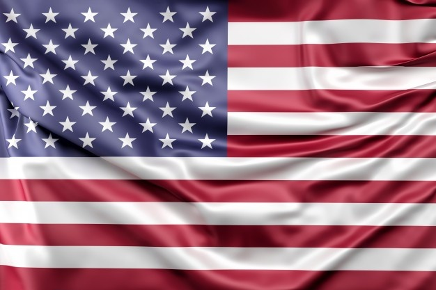
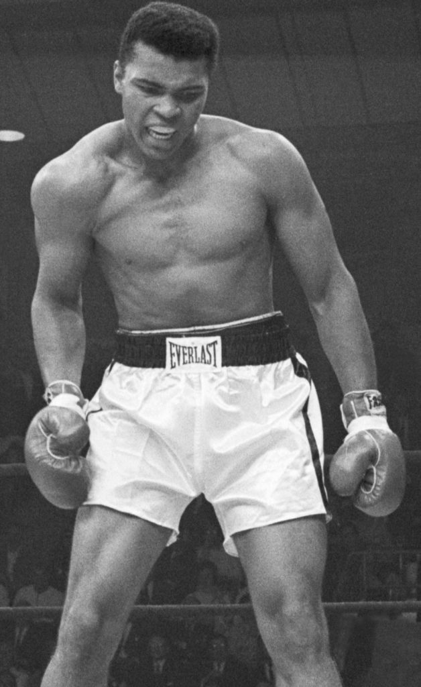
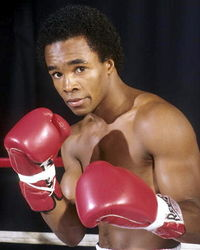
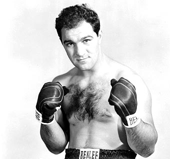
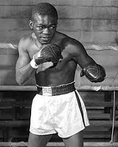
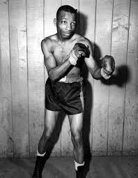

|  | ESTADOUNIDENSES |
INICIO |
MEXICANOS |
PUERTORRIQUEÑOS |
|  | Nombre: Muhammad Ali |
| Edad Actual: Muerto | |
| Record Profesional: 56 victorias (37 nocauts), 5 derrotas | |
| Record: Premio Martin Luther King, Jr. (1970), Ingresado al Salón de la Fama del Olimpismo de los Estados Unidos (1983), Reconocimiento al servicio distinguido por la Asociación Mundial del Boxeo (1985), Ingresado al Salón Internacional de la Fama del Boxeo (1990), Premio Arthur Ashe por labor altruista (1997), Medalla Presidencial de la Libertad (2005), Reconocimiento como «Rey del Boxeo» por el Consejo Mundial del Boxeo (2012), Deportista del Siglo XX por Sports Illustrated, Deportista del Siglo XX por la BBC, Elegido por la revista Time como uno de los veinte personajes más influyentes de los Estados Unidos, Seis veces elegido «boxeador del año» por The Ring (1963, 1966, 1972 —junto a Carlos Monzón—, 1974, 1975 y 1978), | |
| Títulos Mundiales: Título mundial WBC, WBA Y The Ring peso pesado. |
|  | Nombre: Ray Charles Leonard |
| Edad Actual: 63 años | |
| Record Profesional: Totales:40,Victorias: 36, Nocaut: 25, Decisión: 11,Derrotas 3, Nocaut: 1, Decisión: 2 | |
| Record: 0 | |
| Títulos Mundiales: Peso welter en versión del Consejo Mundial WBC, Peso medio supermedio, semipesado del WBC, siendo el primer púgil en proclamarse campeón del Mundo en cinco categorías diferentes |
|  | Nombre: Rocco Francis Marchegiano |
| Edad Actual: Muerto | |
| Record Profesional: 49 Ganadas (43 KOs), 0 Derrotas,0 Empates | |
| Record: 0 | |
| Títulos Mundiales: Campeón Mundial De los Pesos Pesados de la CMB |
|  | Nombre: Ike Williams |
| Edad Actual: muerto | |
| Record Profesional: Totales: 154,? Victorias 125, Nocaut: 60, Decisión: 65, Derrotas: 24, Nocaut: 6, Decisión: 18 | |
| Record: 0 | |
| Títulos Mundiales: Campeón mundial ligero |
|  | Nombre: Sandy Saddler |
| Edad Actual: Se encuentra muerto | |
| Record Profesional: 144 victorias (103 nocauts), 16 pérdidas (1 nocaut), 2 empates | |
| Record: 0 | |
| Títulos Mundiales: Campeón mundial de peso pluma, Campeón mundial de peso súper pluma |